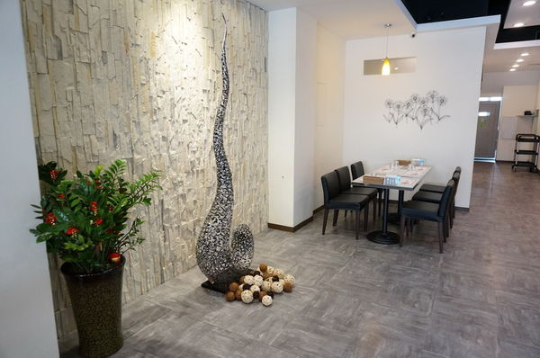

門口有一個小花園可以讓客人候位或吃太飽時放風一下, 感覺就是那麼愜意~
進入店內, 看到的是時尚簡約風裝潢~ 給人明亮又乾淨舒適感,
而且空間非常大, 桌與桌之間空間隔很大, 不會有擁擠感~

店內也有不少藝術裝飾品, 在這裡用餐踢米熊和奇可頓時變得有氣質起來了

餐廳後半部有更寬敞位子, 在新竹踢米熊很少遇到空間感這麼大的餐廳,
應該可以在裡面跑來跑去不會撞到別人XD
PS.踢米熊和奇可哥哥們是有練過, 不要亂學啊~
萩原也有跟地方學校社團合作, 為了鼓勵小朋友多多創作,
會將小朋友創作畫像掛在店內, 讓來用餐客人好好欣賞一番~
萩原他們堅持的是食材安心, 不管是油/麵/乳酩/海鮮肉品/青白紅醬等.
都是以健康高品質原料作為食材. 就由踢米熊老師來為大家講解一下
油- 他們使用優質低溫橄欖油-奧利塔,
是冷壓初榨橄欖油有清新回甘口感, 而且是原裝義大利進口,
在這陣子油品烏雲下萩原有讓客人多了一份食用安心~
麵- 100%杜蘭小麥製造 百味來麵條也是原裝義大利進口,
口感上會比較Q彈厚實. 看來都闆真的是不惜成本耶~
乳酩-使用的是12~18個月熟成的帕瑪森起司整塊刨削使用,
由於是熟成起司, 起司香味上比較濃郁.
海鮮/肉品- 堅持使用優質海鮮及肉品.
青/白/紅醬- 都是店家自己手工製作.
他們餐點是以義大利麵(白醬,紅醬,青醬)/燉飯/焗烤/排餐/鍋物為主,
單點價格在 148~228元. 可以加價最低98元起套餐(湯品/麵包/飲料) 以他們使用都是進口原料來說,
價格上算平價了. 至於美味指數是多少?
就由奇可和踢米熊來驗證一下吧~(文末有詳細MENU)
蔬果沙拉(千島醬), 味道是還OK, 是餐前開胃菜~

手工麵包,使用了老麵來當原料製作, 吃起來口感上比較有嚼勁.
與一般台式麵包軟趴趴口感有所不同
主廚濃湯, 有濃郁玉米奶油香氣, 喝起不會有粉味
原味香煎雞腿排 288元, 這是套餐價格,
除主菜外還有湯品/手工麵包/沙拉/甜點/飲料等.
真是親民價格. 雞排外還有3種小菜, 應該不怕吃不飽XD
難怪最會精挑細選的奇可選了這個超值套餐
雞排煎得非常酥脆, 雞肉則是粉嫩粉嫩~
可是說是一次吃到兩種層次口感
踢米熊看到雪白雞肉也忍不住想跟奇可來一口吃的啦~~~
椒麻嫩雞義大利麵 208元(單點), 金黃色義大利麵加上椒麻紅點點, 在賣相上很吸晴
帶點小辣日式椒麻醬配義大利麵吃很醒胃,
辛辣而濃郁椒麻醬讓雞肉風味有所提昇~
日式椒麻醬份量調得剛剛好, 與義大利麵搭配時不會太乾,
有啾西啾西感覺又不會過於水水. 麵條也夠Q勁~ 推一下!
焗烤奶油鮮蝦飯 208元(單點), 這就是傳說中長頸鹿烤色嗎XD 上桌時還有濃濃起司烤香呢.
牽絲基本動作是一定要的啦! 大家口水已經流到滿地了嗎
蝦子SIZE 很大支, 也很鮮甜, 配上起司吃多了一份鹹香口味~
焗烤飯粒是有米心+Q軟, 這可是小米愛吃燉飯的口感呢~
現烤雞塊 90元(四塊), 口感上是脆皮烤雞. 醃漬也夠入味~
最後一道是老闆隱藏版餐點- 義式海鮮冷麵,
滿滿的海鮮及蕃茄蔬菜舖滿在盤子中, 再加上雪白帕瑪森起司灑在上面,
精緻賣相非常吸晴~
冷麵醬醋有加了蘋果, 吃起來酸V 酸V 味道中多了一份蘋果清甜. 是清爽而不油膩~
因為是冷麵, 所以麵條更為Q彈, 喜歡吃麵條較硬的朋友可以試看看~
奶酪, 半糖甜度及奶味蠻濃郁的. 加上草莓醬酸甜還不錯吃~
黑咖啡, 他們咖啡是現磨現煮的, 不是那種泡好一大壺.
所以喝起來很香醇, 喜歡黑咖啡朋友可以試看看呢~
後記:踢米熊和奇可用餐完畢後都感受到老闆對食材健康及用心的態度,
而且餐點價格也不高, 卻有高質數表現. 是踢米熊和奇可一致跟推薦好店家
引用文章:跟著踢小米吃喝玩樂趣~